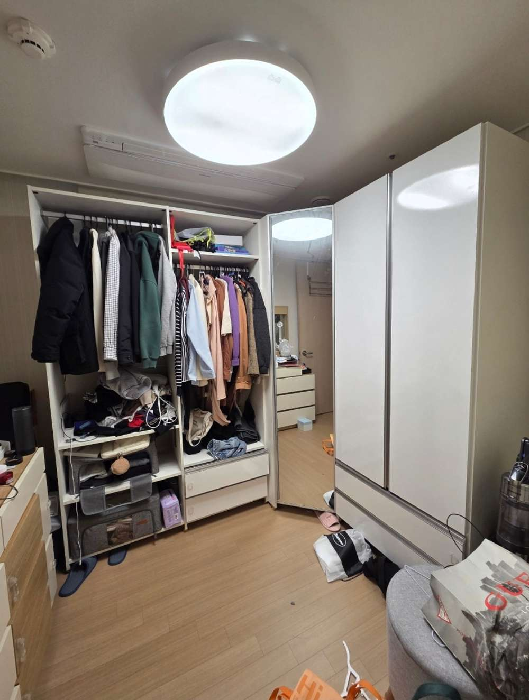
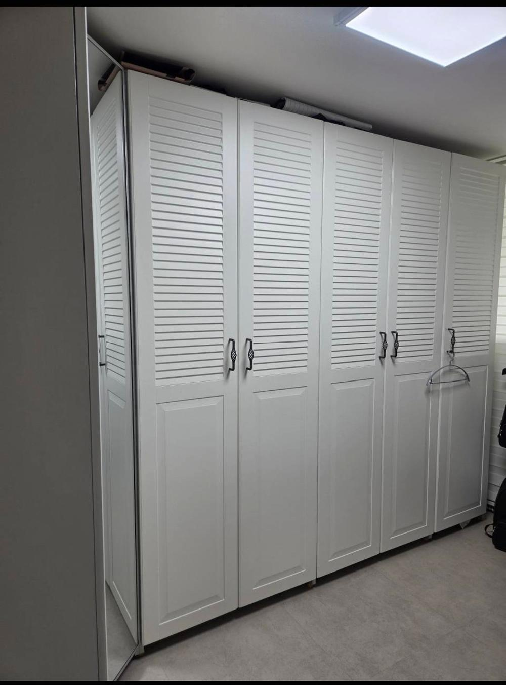
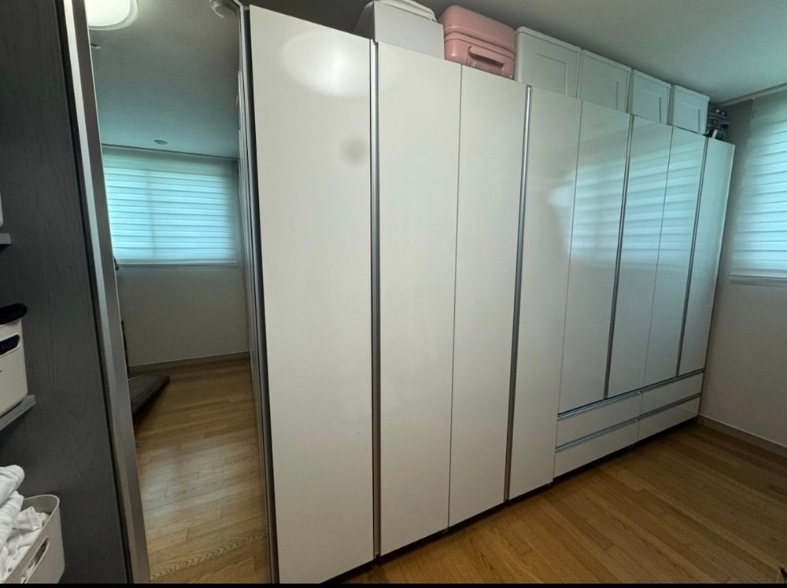
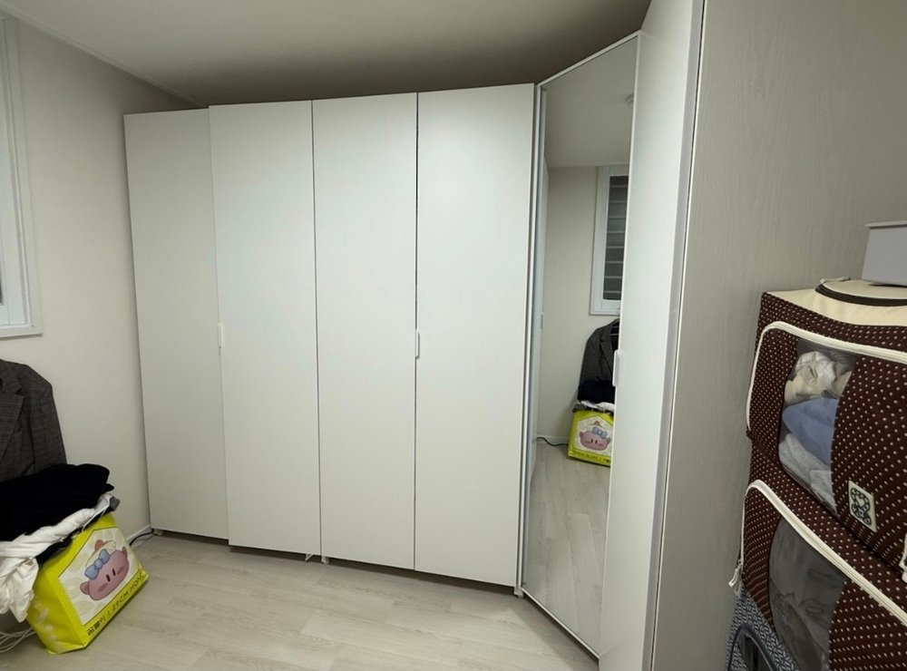
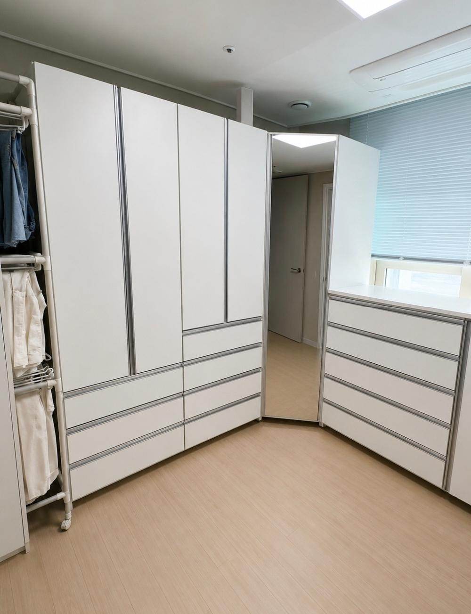
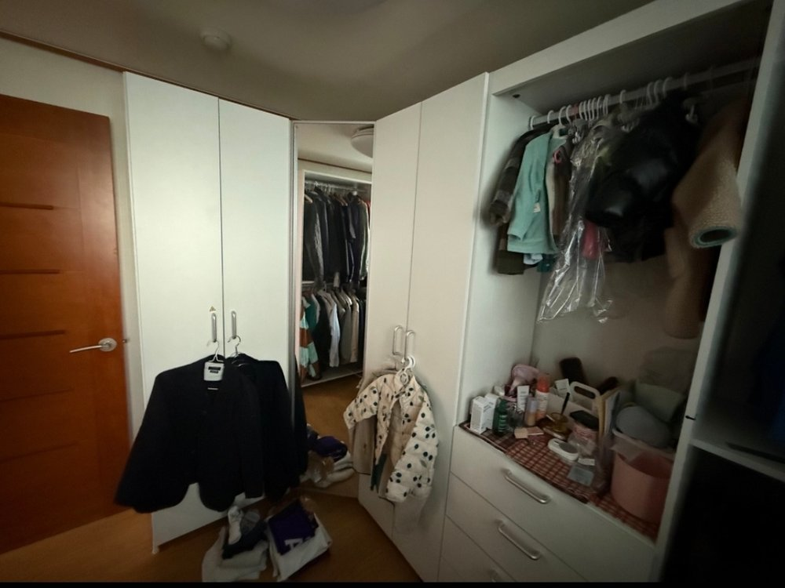
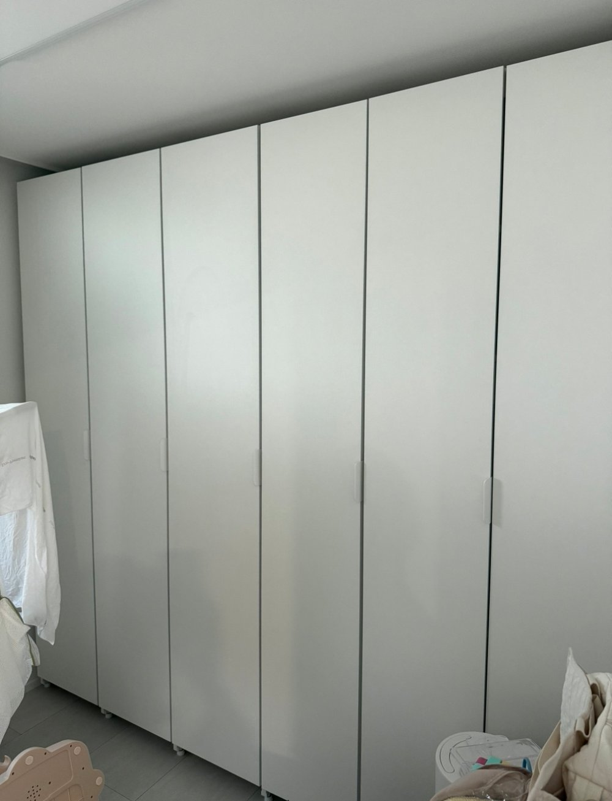
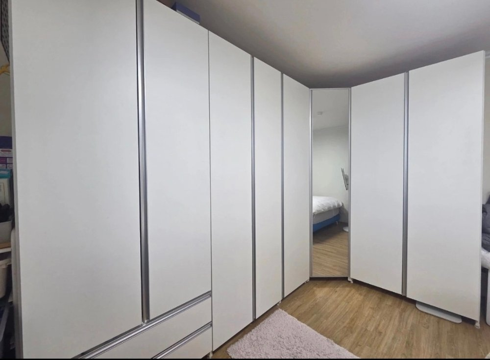

수쿠퍼니텍 이전설치, 분해·재조립부터 구조변경까지 코니처가 한번에 진행합니다
이사, 인테리어 공사, 방 구조변경으로 수쿠퍼니텍 드레스룸·붙박이장을 옮겨야 할 때. 도어·프레임·선반을 하나씩 분해해 새 공간에 맞춰 재조립하고, 필요하면 구조변경까지 함께 진행합니다. 서울·경기·인천 수도권 전체를 방문해 이전설치 비용을 정확히 안내해 드립니다.

수쿠퍼니텍은 통째로 들어 옮기는 가구가 아니라 도어·프레임·선반을 나눠 다시 세우는 작업입니다
수쿠퍼니텍은 뒷판 없이 프레임만으로 벽에 세우는 구조라 일반 붙박이장보다 수쿠퍼니텍 이전설치가 수월한 편입니다. 다만 기둥 개수와 선반 위치, 도어 힌지 위치가 집마다 다르게 짜여 있어서 분해 순서를 기록하지 않으면 새 집에서 원래 구조를 그대로 맞추기 어렵습니다.
코니처는 도어를 하나씩 떼어 힌지 위치를 기록하고, 프레임 기둥에 번호를 붙이고, 선반과 서랍은 따로 분리해 포장한 뒤 새 공간의 폭과 높이에 맞춰 다시 조립합니다. 새 공간 치수가 달라 배치를 바꿔야 한다면 수쿠퍼니텍 구조변경이 함께 필요합니다.
이삿짐센터에서 수쿠퍼니텍이 걱정된다면
분해 순서를 모르고 옮기면 부품을 분실하거나 나사산이 손상되는 경우가 있습니다. 거울 도어는 무게가 상당해서 혼자 떼어내다 도어가 넘어가는 사고로 이어질 수 있습니다. 그래서 분해 전에 프레임 연결 지점과 도어 힌지 위치부터 파악합니다.
이런 상황에 수쿠퍼니텍 이전설치가 필요합니다
실제 문의가 많은 대표적인 세 가지 상황입니다
이사할 때
기존 집에서 분해한 수쿠퍼니텍 드레스룸·붙박이장을 새 집 벽면에 맞춰 다시 세웁니다. 이사 전에 사진을 보내 주시면 구조변경이 가능한 타입인지 미리 확인하고 방문합니다.
중고로 구입했을 때
중고로 구입한 수쿠퍼니텍은 판매자 집 구조에 맞춰져 있어 그대로 맞지 않는 경우가 많습니다. 옮기는 일과 새 공간에 맞게 다시 구성하는 일을 함께 확인합니다.
방을 옮기거나 구성을 바꿀 때
같은 집 안에서 쓰임이 달라져 선반 높이와 옷봉 위치를 조정하거나, 기존 자재를 살려 구조변경 재설치를 하는 경우입니다.
이런 수쿠퍼니텍을 이전·재설치합니다
같은 수쿠퍼니텍이라도 구입 시기와 라인에 따라 프레임 규격이 달라서, 모델에 맞는 분해 방법으로 진행합니다
여닫이 도어 옷장·서랍장
여닫이 도어 옷장과 서랍장이 결합된 구성은 도어 힌지 위치와 서랍 레일을 먼저 기록한 뒤 분리합니다.
슬라이딩 도어 붙박이장
레일 분리와 재고정이 까다로워 이동만 해도 난이도가 높은 타입입니다. 위치와 내부 구성 변경을 함께 진행하기도 합니다.
ㄱ자 코너장·거울 도어
벽면 각도에 맞춰 짜인 코너장은 각도 오차에 민감하고, 거울 도어는 무게가 있어 분해 순서가 중요합니다.
프레임형 드레스룸 (선반·행거봉)
프레임 기둥과 선반, 행거봉을 조합한 타입은 기둥 간격과 선반 위치를 조정하는 구조변경이 상대적으로 수월합니다.
코너 오픈 선반이나 하부 서랍장이 함께 있는 구성도 사진 확인과 방문 확인 후 진행합니다.
수쿠퍼니텍 이전설치 방법과 진행 절차
문의부터 재조립·점검까지 다섯 단계로 진행합니다
분해할 때는 이렇게 기록합니다
- 도어는 하나씩 떼어내며 힌지 위치를 기록합니다.
- 프레임 기둥은 벽면별로 번호를 붙여 원래 배치를 알 수 있게 표시합니다.
- 코너 오픈 선반은 휘어지지 않도록 선반만 따로 분리해 포장합니다.
- 서랍장은 레일을 먼저 빼고 본체만 따로 옮깁니다.
수쿠퍼니텍 구조변경, 어떤 경우에 가능한가요
제품 타입에 따라 가능한 경우와 어려운 경우가 나뉘어서 겉모습만으로는 단정하기 어렵습니다
가능한 경우
프레임 기둥 간격을 조정하거나 도어 위치를 옮길 수 있는 프레임형, 내부 홈 방식으로 선반 위치를 바꿀 수 있는 타입입니다.
어려운 경우
도어와 프레임이 일체형으로 제작돼 도어 폭이 고정된 타입, 선반이 고정된 타입은 벽면 크기가 달라지면 도어를 새로 맞추지 않는 한 구조변경이 어렵습니다. 무리하게 시도하면 프레임이 손상되거나 선반이 제대로 고정되지 않을 수 있습니다.
코너장은 각도 보정이 필요할 수 있습니다
각도가 정해진 코너장은 새 벽면이 정확한 직각이 아니면 추가 보정 작업이 필요할 수 있습니다. 그래서 사진으로 먼저 확인하고, 방문해서 프레임 내부 구조를 보고 판단합니다.
수쿠퍼니텍 이전설치 비용은 무엇에 따라 달라지나요
정해진 가격표 대신 사진 확인과 현장 확인 후 정확하게 안내합니다
| 도어 개수 | 도어가 많을수록 분해·재조립 작업량이 늘어납니다 |
|---|---|
| 코너 구조 | ㄱ자 코너장은 각도에 맞춘 분해와 보정이 필요합니다 |
| 거울 도어 등 무거운 부속 | 무게가 많이 나가는 부속이 있으면 작업 시간도 함께 늘어납니다 |
| 구조변경 여부 | 위치만 옮길 때보다 내부 구성까지 바꾸면 추가 비용이 발생할 수 있습니다 |
수쿠퍼니텍 이전설치 시공 사례
코니처가 실제로 진행한 수쿠퍼니텍 이전설치·구조변경 현장입니다







수쿠퍼니텍 이전설치 후기
블로그에 올린 실제 현장 후기입니다
수쿠퍼니텍 이전설치 상담 전, 이 사진을 보내 주세요
통화보다 사진을 보며 구조를 확인하는 게 더 정확해서, 문자로 먼저 연락 주시길 권해드립니다
| 가구 전체 사진 | 도어 개수와 전체 구성 확인 |
|---|---|
| 코너·거울 도어 부분 | 코너장 각도와 거울 도어 유무 확인 |
| 내부 선반·행거봉 | 구조변경이 가능한 프레임 타입인지 확인 |
| 새 설치 공간 사진·치수 | 폭, 높이, 콘센트 위치, 문 열림 방향 확인 |
| 중고 구입 여부 | 판매자 집 구성과 새 공간 비교 |
수쿠퍼니텍 이전설치 출장 지역 안내 (서울·경기·인천)
서울, 경기, 인천 수도권 전체 방문 상담이 가능합니다. 아래에 없는 지역도 수도권이라면 문의해 주세요.
서울 수쿠퍼니텍 이전설치 (25개 구)
경기 수쿠퍼니텍 이전설치 (31개 시·군)
인천 수쿠퍼니텍 이전설치 (10개 구·군)
▶ 코니처 블로그 바로가기
수쿠퍼니텍 이전설치 자주 묻는 질문
수쿠퍼니텍 이전설치 비용은 어떻게 정해지나요?
도어 개수, 코너 구조, 거울 도어 같은 무거운 부속, 구조변경 여부에 따라 달라집니다. 사진을 보내 주시면 먼저 확인하고, 방문 후 정확한 비용을 안내해 드립니다.
수쿠퍼니텍 이전설치 방법은 어떻게 되나요?
도어를 하나씩 분해해 힌지 위치를 기록하고, 프레임 기둥에 번호를 붙이고, 선반과 서랍을 따로 분리한 뒤 새 공간에서 순서대로 재조립합니다.
수쿠퍼니텍 구조변경도 가능한가요?
프레임형이나 내부 홈 방식으로 선반 위치를 바꿀 수 있는 타입은 가능한 경우가 많습니다. 도어·프레임 일체형이나 고정 타입은 어려울 수 있어 사진 확인과 방문 확인 후 판단합니다.
이삿짐센터에 맡기면 안 되나요?
분해 순서를 모르고 옮기면 부품 분실이나 나사산 손상이 생길 수 있습니다. 수쿠퍼니텍은 분해 전에 프레임 연결 지점과 도어 힌지 위치를 파악하고 기록해야 해서, 구조를 아는 업체에 맡기시길 권합니다.
중고로 구입한 수쿠퍼니텍도 이전설치가 되나요?
가능합니다. 판매자 집 구조와 다를 수 있어 새 공간에 맞게 구성을 바꾸는 구조변경이 함께 필요한 경우가 많습니다.
용산, 성남처럼 제 지역도 방문하나요?
서울, 경기, 인천 수도권 전체를 방문합니다. 용산, 성남, 수원, 고양 등 어느 지역이든 문자로 문의해 주세요.
스쿠퍼니텍 이전설치도 같은가요?
'스쿠퍼니텍'으로 검색하시는 분도 많은데, 수쿠퍼니텍 가구를 찾으시는 경우라면 동일하게 이전설치를 진행합니다.
어떻게 문의하나요?
화면의 상담 버튼으로 문자를 보내시거나 010-5850-0228로 전화하실 수 있습니다. 사진과 함께 문자로 먼저 연락 주시면 구조 확인이 더 정확합니다.